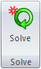
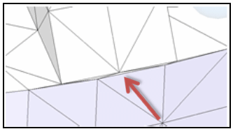
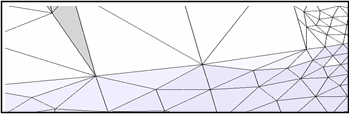
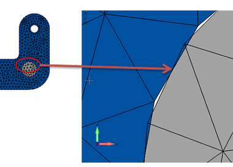

NX Nastran processing errors
The NX Nastran Solve Error dialog box is displayed when the Solve command

generates errors that must be corrected before analysis processing can be completed. Here are some interpretations of common solution processing errors and how to correct them.Study definition errors and warnings
-
Error Message: Incomplete Material definition.
Correction: Static analysis requires material definition to contain Young's Modulus, Shear Modulus, and Poisson's Ratio. Use the Edit Material command
 to add the information.
to add the information. -
Error Message: Incomplete Material definition. Density property is required for body loads.
Correction: Add density to material definition. Use the Edit Material command
to add the information. -
Error Message: Incomplete Material definition. Thermal expansion property is required for stress due to temperature loads.
Correction: Add the coefficient of thermal expansion to the material definition. Use the Edit Material command
to add the information. -
Error Message: Solution processing completed without fatal errors, but no results were generated.
Correction: In the Modify Study dialog box, under Advanced Options, set the Geometry check option to Warning only, and then solve the study again.
Under-constrained model errors
When NX Nastran displays error 9137, Run Terminated Due To Excessive Pivot Ratios, this means the model is under-constrained. Here are some ways to correct the problem without changing the model geometry:
-
To prevent lateral movement, you can add a Fixed or Sliding Along Surface constraint.
-
To prevent rotation, you can add a Pinned or No Rotation constraint.
-
For sheet metal surfaces, the constraint needs to be normal to the surface.
-
For an assembly, change the connector type. For example, use a Glue connector rather than a No Penetration Contact connector. However, if a No Penetration Contact connector is appropriate because you need to allow pivot, then add one or more constraints to the model.
Solver errors
If NX Nastran displays an error that the solution cannot process with the iterative solver, then you can clear the Iterative Solver check box under Advanced Options in the Modify Study dialog box.
In most cases, the Iterative Solver option is set or cleared as appropriate by Solid Edge Simulation.
Geometry complexity errors
Sometimes NX Nastran displays an error related to complex geometry, such as the following:
You can:
-
Edit the study processing parameters to set the Geometry check option to Warning only, and then solve the study again.
-
Verify that the Use advanced meshing check box is selected on the Mesh Size page in the Mesh Options dialog box. This removes sliver geometry during meshing to ensure mesh processing completes in most cases.
Example:Before—Sliver geometry is visible.

After—Geometry is simplified.

Assembly connector distance warnings
Connector distance warnings are displayed when the target and source faces you selected are farther apart than the distance you specified.
-
You can correct this by changing the search distance.
-
You can edit the target-source connection by sizing the mesh to make it smaller and denser on the source side than on the target side.
-
You can use the Swap Target-Source button on the Assembly Connector command bar to swap the geometry assigned to the target-source face pair.
Mesh interference: closing nominal gaps in bearings and bolted parts
It is possible to get mesh interference even with parts that do not interfere due to the mesh not being an exact duplicate of the geometry. If the interference occurs at the location of a no penetration connector, you can get incorrect stresses and displacements.
Refer to the following example of a bolt or pin in a hole. Even though the two parts may have the same nominal size at mating surfaces, the resulting mesh overlaps the two contact segments, resulting in differing mesh sizes or nonalignment of angles.

You can correct for this using the Initial Penetration option in the Assembly Connector Properties dialog box. The default for this option, Calculated (0 or 1), does not account for the inexact fit interference condition described above. Instead, choose the Zero Gap/Penetration (3) option.
You also may be able to avoid problems by making adjustments in the model:
-
Set the bolt diameter equal to the hole diameter.
-
Move the parts so that they are physically aligned.